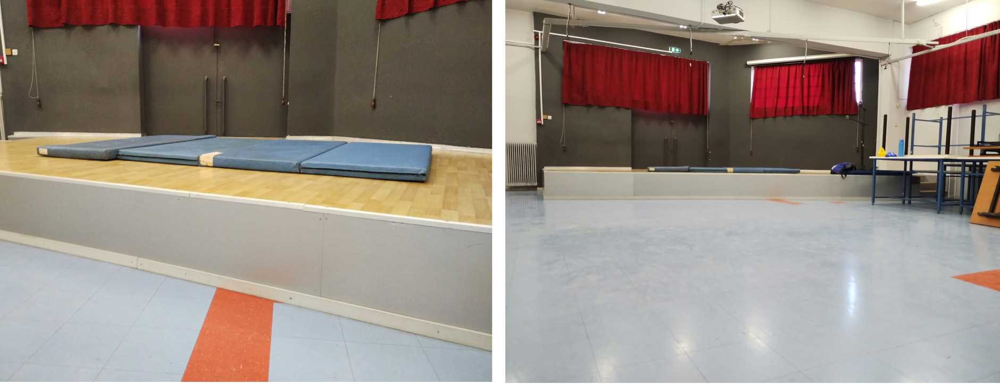
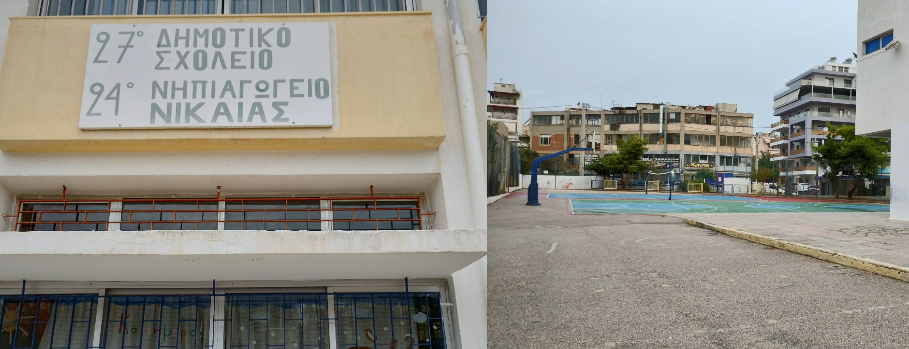

Παρουσίαση στο 2ο Δημοτικό Ρέντη και στο 27ο Δημοτικό Νικαίας
Ημέρα σχολικού αθλητισμού
Ως εκπρόσωπος της Πανελλήνιας Ομοσπονδίας Σούμο επεσκέφθην το δεύτερο δημοτικόν σχολείον Ρέντη για την προώθησιν του εθνικού αθλήματος της Ιαπωνίας. 150 παιδιά εξασκήθηκαν στο σούμο και έπαιξαν αγώνες σε στρώματα, ενώ οι μεγάλες τάξεις (άλλα 50 παιδιά) ενημερώθηκαν θεωρητικά για τη σημασία του αθλητισμού ως συμπλήρωμα της μάθησης, τις πολεμικές τέχνες, τις παλαιστικές τέχνες και ειδικότερα το σούμο.
Τα μικρά αν και δεν είχαν ιδέα για το Σούμο, ενθουσιάστηκαν με την επίδειξη των τεχνικών και δοκίμασαν την oshidashi και το βηματισμό suriashi.
Ευχαριστώ το προσωπικό του σχολείου για μια επιτυχημένη γνωριμία με ένα άγνωστο άθλημα στην Ελλάδα (δυστυχώς ακόμα).

27ο δημοτικό σχολείον Νικαίας
Στις 13 Οκτωβρίου σε επίσκεψή μου στο 27ο δημοτικό σχολείο Νικαίας, εξηγήθηκαν οι πολεμικοί δρόμοι, η ιστορία του σούμο, οι κατηγορίες τεχνικών (με σχετικές επιδείξεις), τα χαρακτηριστικά του, οι κανόνες του, η εθιμοτυπία, οι διαφορές με το επαγγελματικό σούμο, το έργο της Πανελλήνια Ομοσπονδία Σούμο και δυο τάξεις (Γ και Δ) διδάχθηκαν oshidashi, yorikiri και έπαιξαν αγώνες.
Ευχαριστώ τον γυμναστή του σχολείου, πρώην αθλητή της πάλης για την άψογη οργάνωση και συνεργασία. Τα δε παιδιά για άλλη μια φορά έδειξαν αγάπη για τη γνώση, περιέργεια και ορισμένα έκαναν πολύ στοχευμένες ερωτήσεις για το άθλημα.
